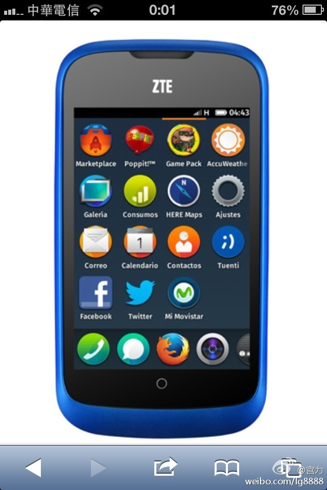

大家都在做手机。Firefox OS智能手机的亮点是便宜吗？//@宫力: 回复@汪建兵_Ben:谢谢！24个月从零开始到手机上市，做个完整的移动OS还是要拼命才拼得出来！ //@汪建兵_Ben:恭喜，大大滴恭喜老大@宫力:我们Firefox OS智能手机今天正式问世，在西班牙首发由中兴出品的ZTE Open。西班牙电信的售价是69欧元，其中包括30欧元的话费以及一个4G的microSD卡。实际价钱也就30欧元，和人民币240元。 